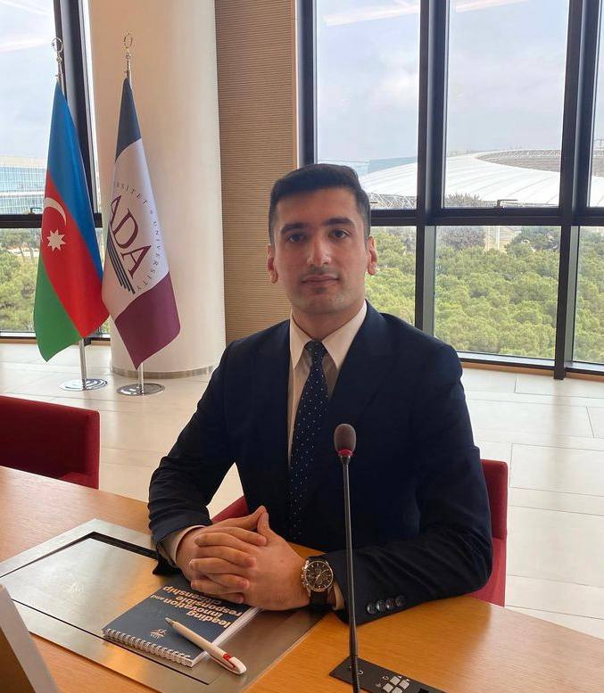
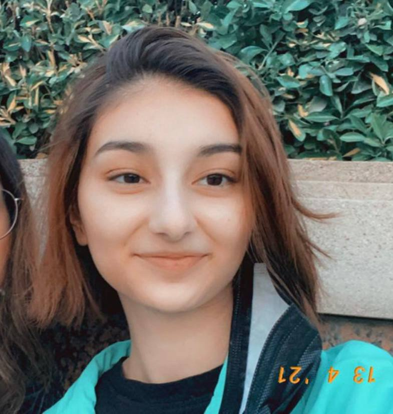
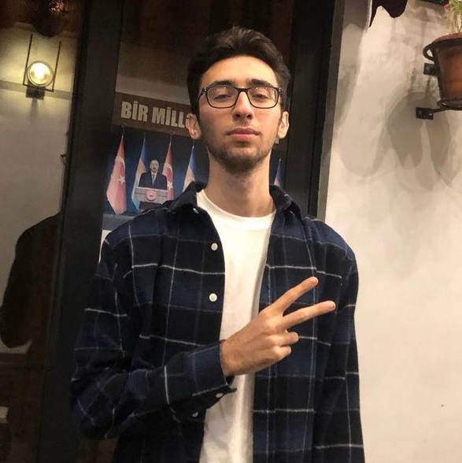

Fidan Hasanli: kept us updated about deadlines, systematized upcoming tasks and duties among team members and translated Ukranian folktale.
Samir Alizada: joined the meeting with the head of the project which was organized for HZT applicants and informed group members about upcoming tasks and duties, found the appropriate pictures for stories, and translated the Ghana folktale
Narmin Mehtizada: designed cover, edited pages of the books, made the book ready for publishing and translated Japan folktale.
Asmar Valizada: arranged meetings with group members, regulated task distribution and contacted with publishers, editors and translated Hungarian folktale.
Nurlan Alisoylu: made research about countries that we can find information about, verified collected data, and translated Native American folktale.